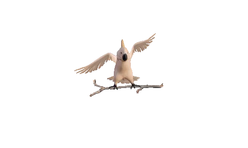

Es existiert ein psychiatrisches Syndrom
("Alice-im-Wunderland-Syndrom"), das auf den Namen des Buches zurückgeht
und von WahrnehmungsveränderungenAlice-im-Wunderland-Syndrom
(wie Größenveränderungen - Makropsie und Mikrospie - sowie die Verzerrung von Zeit und Raum)
und dem Gefühl der Entfremdung von sich selbst oder der Umgebung geprägt ist.
Das Alice im Wunderland Syndrom ist kein eigenständiger medizinischer Zustand mit eigenständiger Diagnose im DSM- oder ICD-System. Der Begriff bezieht sich umgangssprachlich auf eine seltene Wahrnehmungsstörung, bei der Betroffene sensorische Reize verzerrt oder verändert erleben – oft mit veränderten Größenwahrnehmungen von Personen, Objekten oder sich selbst. Es ist wichtig zu betonen, dass dies kein fest definierter klinischer Begriff ist, sondern eher eine Beschreibung von vorübergehenden, dramatischen Wahrnehmungsveränderungen, die in verschiedenen neurologischen oder psychiatrischen Kontexten auftreten können.
Wie entsteht dieses Phänomen? In der medizinischen Fachwelt wird es oft im Rahmen von Migräne mit Aura, fokalen Anfällen, Infektionen des Zentralnervensystems, bestimmten Medikamentennebenwirkungen oder schweren Schlafstörungen beschrieben. Bei Migräne beispielsweise können visuelle oder räumliche Verzerrungen auftreten, die den Betroffenen das Gefühl geben, durch Glas oder eine veränderte Objektivgröße zu sehen. Ähnliche Effekte können auch bei episodischen neurologischen Störungen auftreten, bei denen bestimmte Hirnareale temporär auffällige Aktivitäten zeigen.
Zusätzlich können Stress, Schlafmangel oder neurologische Erkrankungen wie Epilepsien oder Hirninfarkte in speziellen Regionen des Gehirns zu solchen Wahrnehmungsveränderungen beitragen. In einigen Fällen werden auch infektiöse oder entzündliche Prozesse im Gehirn diagnostiziert, die vorübergehend multisensorische Verzerrungen verursachen. Die Erfahrung ist oft intensiv und verwirrend: Objekte wirken größer oder kleiner, Formen können verzogen erscheinen, und die Orientierung im Raum kann stark gestört sein. Gleichzeitig bleiben andere kognitive Funktionen, wie Gedächtnis oder Orientierung, oft erhalten, was die Erfahrung besonders beunruhigend macht.
Wichtig ist, dass eine solche Wahrnehmungsverzerrung immer medizinisch abgeklärt werden sollte. Wer episodisch ungewöhnliche Wahrnehmungen bemerkt, sollte zeitnah ärztliche Hilfe suchen, besonders wenn begleitend Kopfschmerzen, neurologische Ausfälle, Fieber, Verwirrtheit oder neurologische Ausfallzeichen auftreten. Die Behandlung richtet sich nach der Ursachenlage: Bei Migräne kommen oft akute Schmerzmittel, Triptane oder Prophylaktika infrage; bei Infektionen oder Entzündungen ist eine intensive medizinische Behandlung erforderlich; bei Anfällen können Antikonvulsiva oder andere spezifische Therapien nötig sein. Auch eine ausreichende Schlafhygiene, Stressreduktion und regelmäßige ärztliche Nachsorge können helfen, wiederkehrende Episoden zu vermindern.
Zusammengefasst beschreibt das „Alice im Wunderland Syndrom“ eher eine bildhafte Beschreibung von temporären, oft fokalen Wahrnehmungsveränderungen, die in Zusammenhang mit neurologischen oder medizinischen Zuständen auftreten. Es handelt sich nicht um eine eigenständige Krankheit, sondern um ein symptomatisches Phänomen, das eine sorgfältige medizinische Evaluation erfordert.